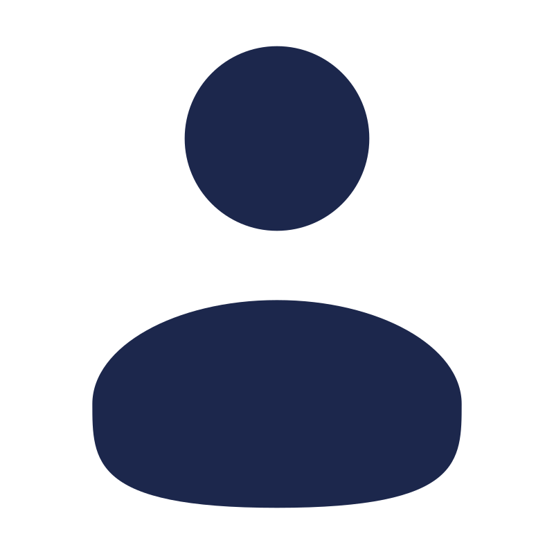
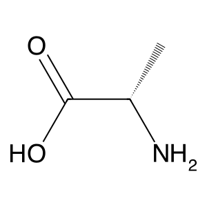
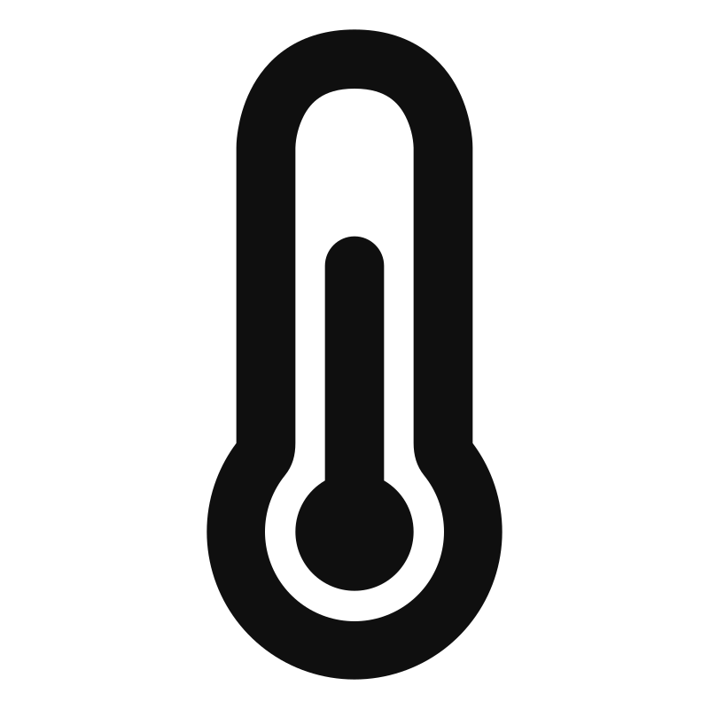
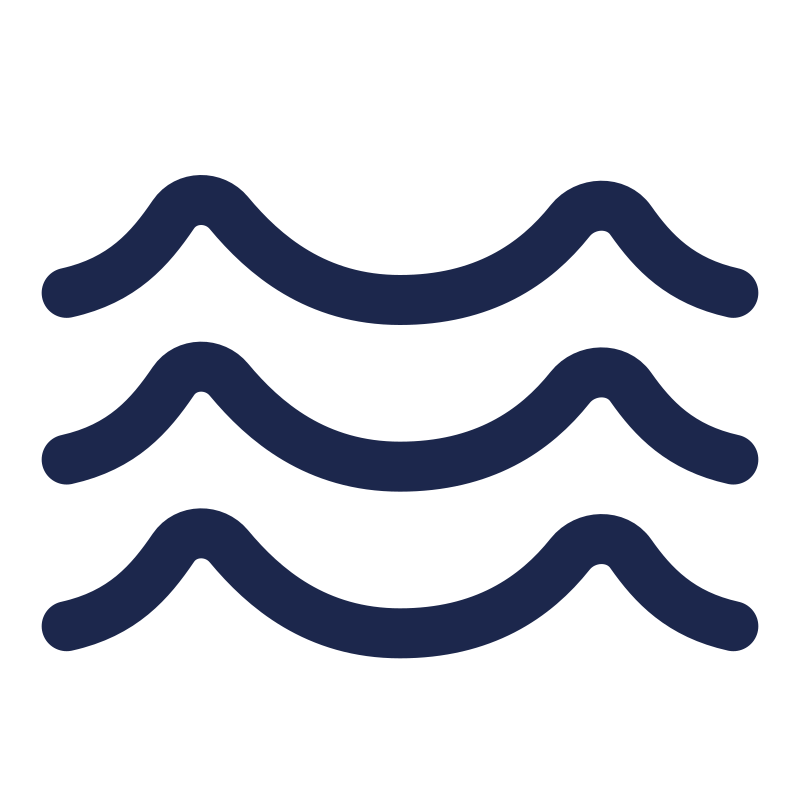
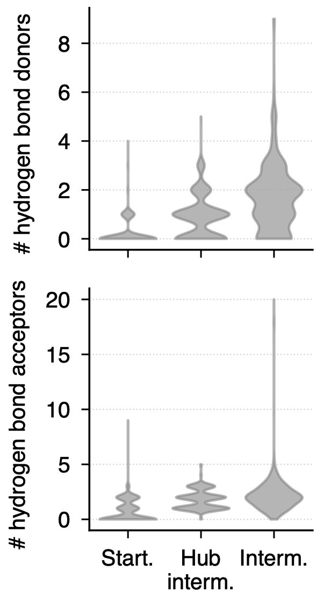
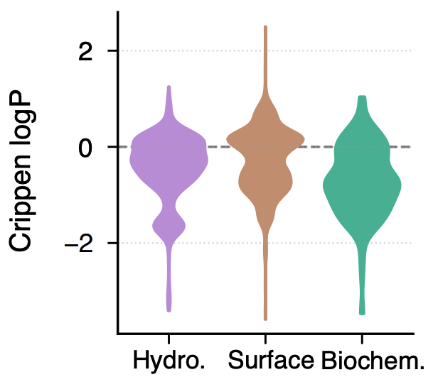

Autonomous Multi-Agent Reconstruction of Prebiotic Reaction Networks Reveals Organizational Features of Amino Acid Synthesis

User Task · Input
Instructions
⟶
Target Molecule

L-Alanine
2-aminopropanoic acid
Deep Research
Autonomous multi-agent literature review synthesis
researching…
0sources
Subagents · parallel
Live search · 0 results
Sources · 611
Key findings
✦ Research report ready
Literature Report
Deep Research Agent · Report
The Deep Research Agent's structured report — synthesis routes, key intermediates, reaction mechanisms and conditions, mineral catalysts, experimental evidence, and unresolved mechanistic gaps — passed verbatim to the SynthNet Agent as literature context.
SynthNet Agent
Backbone · Generator
Backbone: GPT-4.1 · GPT-5.4 · Claude Opus 4.6
Molecule Nodes
Reaction Nodes
Named Pathways
Hubs & Convergence
Given the literature report, generates a complete bipartite reaction network in a single LLM call — across Hydrothermal, Surface, and Biochemical environments — with molecule nodes (network role + environment), annotated reaction nodes (reactants, products, catalysts, conditions, rationale, citations), named pathways, and network-level hubs and convergence points.
Critic Agent
Backbone · Evaluator
Backbone: GPT-4.1 · GPT-5.4 · Claude Opus 4.6
Chemical Feasibility
Pathway Coherence
Environmental Consistency
Target Achievement
Hub Quality
Pathway Convergence
Accept if overall confidence ≥ 0.90 · otherwise return feedback to SynthNet and refine (≤ 3 iterations).
A
Reaction Network
Converged synthesis graph → L-Alanine
Reactant (solid)
Product (dashed)
Starting Mol.
Intermediate
Hub Intermediate
Target Molecule
High recall (>75%)
Hydrothermal rxn
Surface rxn
Biochemical rxn
rxn 6Reaction Details

Temperature
Pressure
Catalyst / Agents

Aqueous
Mechanism
 Scientific Reasoning
Scientific Reasoning🗄️100%
Results
Figure 2a · Reaction-network quality across backbone models
 GPT-4.1GPT-5.4
GPT-4.1GPT-5.4 Claude Opus 4.6
Claude Opus 4.6Model Comparison
Averaged across all configurations
Emergent Properties
Figure 2b–d · physicochemical structure across the 8-amino-acid benchmark
H-bond donors / acceptors by role

Crippen logP by environment

20 most-generated molecules
Per-Target Profiles
Figure 3 · reconstruction quality per amino acid · Serine → Histidine
Reconstructed PathwayFigure 4a · L-Alanine · two convergent routes
Hydrothermal
Surface
Biochemical
Reconstructed PathwayFigure 4b · Glycine · four convergent routes
Hydrothermal
Surface
Biochemical
ASTRA-Inferred
Hypothesis NetworkFigure 5a · Histidine · literature-sparse target
Hydrothermal
Surface
Biochemical
Hypothesis NetworkFigure 5b · Tryptophan · mechanistic gaps flagged
Hydrothermal
Surface
Biochemical
Mechanistic gap